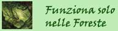
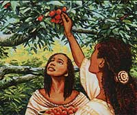
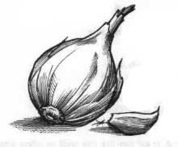
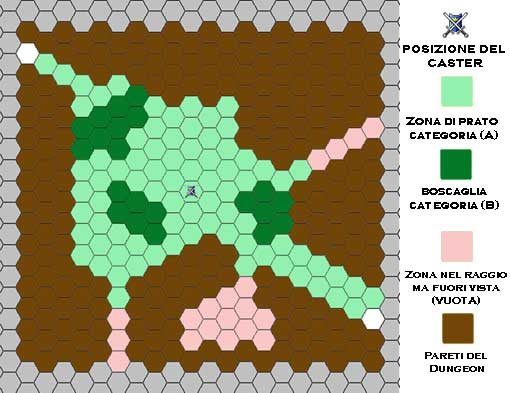

1° LIVELLO DI POTERE
| Combine | Summoning |
| Sphere : | All |
| Range : | Tocco |
| Components : | V, S |
| Duration : | Speciale |
| Casting Time : | 1 round |
| Area of Effect : | Speciale |
| Saving Throw : | None |
Questo incantesimo cumulativo può essere utilizzato da due a quattro chierici. La magia, per precisione, viene utilizzata sempre sul chierico del livello di esperienza più lato (in caso di chierici di pari livello su uno a loro scelta) da quelli di livello più basso. Costoro lanciano la magia toccando il chierico che deve ottenere gli effetti benefici. Quest'ultimo quindi potrà considerarsi, fino a che perdura questa magia, di un livello di esperienza superiore per ogni chierico che ha utilizzato su di lui questo incantesimo al solo fine di effettuare un'azione di scacciare o controllare i non morti e di determinare il livello di lancio dei propri incantesimi. Si noti che, nonostante il chierico possa lanciare magie ad un livello di lancio superiore, questo incantesimo non permette al chierico di accedere a magie diverse da quelle alle quali aveva regolarmente accesso né di ottenere punti preghiera supplementari. Per funzionare la magia richiede che il chierico beneficiario non si sposti dalla posizione occupata al momento del suo lancio nonché il mantenimento della concentrazione da parte dei chierici che l'hanno lanciata i quali, se attaccati durante il mantenimento della concentrazione, saranno considerati (sempre che non decidano di interromperla) come se fossero storditi [stunned]. Se, per qualsiasi motivo, viene meno la concentrazione del chierico che ha lanciato questo incantesimo od il suo contatto fisico con il beneficiario (ad es. il chierico che ha lanciato la magia si sposta o cade al suolo knockdown) la magia terminerà immediatamente solo in relazione al chierico che ha interrotto la concentrazione. Se, invece, è il chierico che beneficia di questa magia a spostarsi dalla posizione originariamente occupata (od a cadere al suolo knockdown) costui farà venir meno tutte le magie di combine che gli erano state lanciate. Si noti, infine, che se è solo il chierico beneficiario a perdere la concentrazione nel lancio delle sue magie ciò non influenzerà gli incantesimi di combine che gli erano stati lanciati addosso.
| Detect Magic | Divination |
| Sphere : | Divination |
| Range : | 0 |
| Components : | V, S, M |
| Duration : | 1 round |
| Casting Time : | 1 round |
| Area of Effect : | The Caster |
| Saving Throw : | None |
Quando il chierico lancia questo incantesimo riesce a percepire la luminosità delle aure magiche presenti entro 30 metri di distanza dallo stesso. Per poter percepire la luminosità dell'aura, però, il chierico deve poter vedere, anche se parzialmente, l'oggetto o la zona in cui l'aura è in effetto. Un chierico non potrà vedere, ad es. l'aura di un oggetto magico che si trova all'interno di uno zaino o sepolto da macerie. In base all'intensità dell'aura, inoltre, il chierico potrà determinare la potenza dell'incantamento. Se si tratta di effetti magici dovuti ad incantesimi, quindi, il chierico potrà determinare il livello di potere della magia di cui analizza gli effetti. Se, invece, si tratta di oggetti magici costui potrà determinarne la potenza dell'incantamento come indicata nella seguente scala:
|
POTENZA DELL'INCANTAMENTO |
PUNTI ESPERIENZA |
| Least Minor Enchantment | 75 punti esperienza |
| Lesser Minor Enchantment | 100 punti esperienza |
| Minor Enchantment | 150 punti esperienza |
| Superior Minor Enchantment | 250 punti esperienza |
| Greater Minor Enchantment | 375 punti esperienza |
| Lesser Enchantment | 500 punti esperienza |
| Superior Enchantment | 1000 punti esperienza |
| Greater Enchantment | 1500 punti esperienza |
Il componente materiale di questo incantesimo è il simbolo sacro del chierico.
| Detect Poison | Divination |
| Sphere : | Divination |
| Range : | 30 metri |
| Components : | V, S, M |
| Duration : | Istantanea |
| Casting Time : | 4 |
| Area of Effect : | Una creatura od un oggetto |
| Saving Throw : | None |
Quando il chierico lancia questo incantesimo riesce a percepire se l'oggetto o la creatura indicata durante il lancio della magia è velenoso od è stato avvelenato. Risulterà velenosa qualsiasi creatura abbia capacità venefiche. Il chierico potrà ad esempio individuare un'arma od una bevanda che è stata avvelenata. Si noti che il chierico non rileverà come velenosi gli oggetti magici che solo quando attivati diventino tali a meno che la magia non sia lanciata durante la loro attivazione (ciò contrariamente a quegli oggetti che sono sempre potenzialmente velenosi ma che richiedono un particolare tiro per infondere il loro veleno, si pensi ad un'arma di arcanite che risulterà sempre velenosa). Il chierico, inoltre, avrà una possibilità pari al 5% per livello di lancio dell'incantesimo (fino ad un massimo del 95%) di determinare anche la tipologia e gli effetti specifici del veleno che ha individuato. Il componente materiale di questo incantesimo è una striscia di velluto bianco che diventa nero se l'oggetto dell'incantesimo è velenoso od è stato avvelenato. Comunemente 10 strisce di questo velluto hanno un costo di 3 monete d'oro ed un peso pari ad 1 libbra. Il componente si consuma al lancio dell'incantesimo.
| Entangle | Alteration |
| Sphere : | Plant |
| Range : | 30 metri |
| Components : | V, S, M |
| Duration : | 1 turno |
| Casting Time : | 4 |
| Area of Effect : | Speciale |
| Saving Throw : | Speciale |
Utilizzando
questo incantesimo il chierico fa letteralmente attorcigliare la vegetazione
presente sul suolo dell'area d'effetto alle creature che vi entrano al fine di
impedirne o rallentarne i movimenti (questa versione dell'incantesimo non può
essere utilizzata sulle alghe e le altre piante marine). Il chierico potrà influenzare la superficie
presente in
un numero di esagoni di 3 metri di diametro pari a due più un esagono
supplementare ogni due livelli di
lancio oltre il primo (2 esagoni al 1° livello di lancio, 3 esagoni al 3°
livello di lancio, e così via...) fino ad un massimo di sette esagoni all'11°
livello di lancio. Il chierico può disporre queste aree a piacimento purché tutte
si trovino all'interno del raggio di azione della magia e siano disposte senza
soluzione di continuità tra di loro. Affinché questa magia possa essere lanciata
nella zona esserci un'adeguata vegetazione. La presenza di prato basso non è di
per sé sufficiente al lancio della magia ma occorre almeno la presenza di un
prato alto almeno una trentina di cm. La vegetazione presente nell'area, che può
variare da categoria A a D secondo il seguente schema, inoltre influenza il tiro
salvezza delle creature presenti o che entrano nell'area dove ha effetto la
magia:
Cat. A) Presenza solo prato sufficiente al lancio della magia (Forza 18/01 -
18/99): Bonus di +1 al tiro salvezza.
Cat. B) Presenza di prato alto e/o arbusti a basso fusto o canneti o zone
coltivate, vigneti ecc.. (Forza 18/00): Nessuna modifica al tiro salvezza.
Cat. C) Foresta con presenza di arbusti a medio fusto, rampicanti ed alberi
(Forza 19): Malus di -1 al
tiro salvezza.
Cat. D) Jungla con vegetazione ad alto fusto fitta e presenza di liane (Forza
20): Malus di -2 al tiro salvezza.
* Le creature con un punteggio di forza pari o superiore a quello indicato per
tipo di vegetazione effettuano automaticamente il tiro salvezza ma sono comunque
rallentate dalla magia.
* Le creature con un punteggio di forza particolarmente basso ottengono una
penalità al tiro salvezza pari alla loro penalità ai tiri per colpire dovuti a
tale basso punteggio nell'abilità.
* Le creature di dimensioni Tiny e Small ottengono, in ogni caso, un'ulteriore
penalità di -1 al tiro salvezza.
* Le creature di dimensioni Large si considerano avere forza minima 18/01 (a
meno che non sia specificata una forza superiore) ed ottengono comunque un bonus
di +1 al tiro salvezza; le creature di dimensioni Huge sono immuni agli effetti
della magia in aree di vegetazione Cat. A), inoltre si i considerano avere forza
minima 18/00 ed ottengono comunque un bonus di +2 al tiro salvezza; le creature
Gargantuan sono immuni all'effetto di questo incantesimo.
Le creature che superano il tiro salvezza contro incantesimi (e che non sono
immuni ai suoi effetti) sono libere di muoversi all'interno dell'area
impiegando, però, un intero round per uscire da ogni esagono coinvolto dalla
magia (non sarà rilevante se anche l'esagono in cui desiderino entrare è
coinvolto dall'incantesimo). Le creature che entrino in un esagono sotto effetto
di questa magia, quindi, devono immediatamente superare un tiro salvezza contro
incantesimi ed, in ogni caso terminare il proprio spostamento del round. Una
volta che una creatura ha superato un tiro salvezza, non occorre che questa
effettui ulteriori tiri salvezza anche qualora rientri nell'area di effetto
durante il corso della magia. Le creature che, invece, falliscono il tiro
salvezza non potranno spostarsi dal round in questione essendo il loro movimento
impedito dalle piante, queste creature non subiranno, però, alcuna penalità al
combattimento ed al lancio delle magia anche somatiche (potendo, quindi,
utilizzare eventuali forme magiche di spostamento per uscire dall'area che, se
utilizzate, richiederanno alla creatura di effettuare un nuovo tiro salvezza in
caso di nuovo ingresso nell'area d'effetto). Il componente materiale di questo
incantesimo è il simbolo sacro del chierico.
| Endure Cold and Heat | Abjuration |
| Sphere : | Protection |
| Range : | Tocco |
| Components : | V, S, M |
| Duration : | 24 ore |
| Casting Time : | 1 round |
| Area of Effect : | Una creatura |
| Saving Throw : | None |
Questo incantesimo protegge la creatura che lo riceve dal calore e dal freddo. In particolare, per un'intera giornata, chi riceve questo incantesimo non patirà gli effetti di temperature molto basse o molto alte resistendo da -20° a 50° centigradi anche indossando dei comuni vestiti. Qualora il personaggio si trovi esposto a temperature che superano le soglie di resistenza la magia terminerà immediatamente. Qualora, inoltre, il personaggio subisce una qualsiasi forma di danno (sia di origine magica che naturale) da freddo, fuoco o calore la magia terminerà immediatamente ma il primo danno di questo tipo subito sarà ridotto di 2 punti danno + 1 punto danno per livello di lancio della magia (fino ad un massimo di 10 punti danno all'8° livello di esperienza). Questa magia, infine, terminerà immediatamente qualora chi l'ha ricevuta si sottopone agli effetti di una qualsiasi altra protezione magica al freddo, al fuoco od al calore. Il componente materiale di questo incantesimo è il simbolo sacro del chierico.
| Magical Stone | Enchatment |
| Sphere : | Combat |
| Range : | Tocco |
| Components : | V, S, M |
| Duration : | Speciale |
| Casting Time : | 4 |
| Area of Effect : | da 1 a 3 ciottoli |
| Saving Throw : | None |
Utilizzando questo incantesimo il chierico può incantare fino a tre ciottoli non più grandi di quelli utilizzabili come proiettili comuni di una fionda. Una volta incantati i ciottoli potranno essere scagliati a mano fino a 30 metri di distanza. I ciottoli potranno essere scagliati anche tutti nel medesimo round (il primo ad un fattore iniziativa pari a +3, gli altri a fine round come attacchi multipli non simultanei). Per colpire il bersaglio sarà necessario effettuare un normale tiro per colpire (modificato dalla destrezza) anche se l'incantamento divino presente sui ciottoli farà automaticamente considerare abile nel loro uso chi si appresta a lanciarli. I ciottoli, inoltre, saranno considerati come armi magiche con incantamento +1 al solo fine di determinare se siano in grado di danneggiare creature immuni alle armi normali. Ogni ciottolo che va a segno provocherà 1d4 danni da impatto, 2d4 danni da impatto contro i non morti e le creature demoniache. Una volta lanciati i ciottoli si sgretoleranno in polvere definitivamente. I ciottoli possono anche essere lanciati come proiettili di una fionda ma in tal caso saranno utilizzate le normali regole di attacco (tranne che per l'incantamento e per i danni subiti dal bersaglio una volta colpito). Se i ciottoli non sono utilizzati immediatamente la magia perdurerà sugli stessi per 30 rounds al termine dei quali i ciottoli si sgretoleranno comunque in polvere come se fossero stati lanciati. Il componente materiale di questo incantesimo è il simbolo sacro del chierico e fino a tre ciottoli di fiume dalla forma assai levigata dal valore di 1 monete d'oro (per tutti e tre i ciottoli) e dal peso di 1/2 libbra l'uno.
| Sanctuary | Abjuration | |
| Sphere : | Protection | |
| Range : | Tocco |
 |
| Components : | V, S, M | |
| Duration : | 2 rounds + 1 round/livello | |
| Casting Time : | 4 | |
| Area of Effect : | Una creatura | |
| Saving Throw : | Speciale |
Quando il chierico lancia questa magia la creatura che la riceve viene protetta dalla divinità agli occhi dei propri nemici. Tutte le creature ostili alla creatura protetta presenti al momento del lancio o che la incontrino nel corso della durata della magia devono effettuare un tiro salvezza contro incantesimi. Se il tiro salvezza è fallito costoro perderanno la consapevolezza della presenza della creatura protetta agendo come se la stessa non fosse presente per tutta la durata dell'incantesimo. Se, però, la creatura protetta effettuerà una qualsiasi azione possa essere considerata, anche in senso lato, offensiva (sia direttamente che indirettamente) nei confronti di una qualsiasi creatura (non solo quindi nei confronti di chi ha fallito il tiro salvezza) la magia terminerà alla fine del round in cui il soggetto ha posto in essere tale azione (ad esempio riattivare una trappola precedentemente disattivata sarà considerata un'azione di tipo offensivo). Si noti che il lancio di incantesimi di mero potenziamento, di protezione o di cura effettuati sulla propria persona non saranno in alcun caso ritenute azioni di tipo offensivo, laddove, invece, se tali incantesimi siano lanciati su una diversa creatura questi potranno assumere (ad insindacabile giudizio del Dungeon Master) i connotati di un'azione di tipo offensivo. Il componente materiale di questo incantesimo è il simbolo sacro del chierico ed un piccolo specchio d'argento dal peso di 1/2 libbra e dal costo di 15 g.p. che si consuma al momento del lancio.
2° LIVELLO DI POTERE
| Barkskin | Alteration |
| Sphere : | Plant |
| Range : | Tocco |
| Components : | V, S, M |
| Duration : | 30 round |
| Casting Time : | 1 round |
| Area of Effect : | Una creatura |
| Saving Throw : | None |
Questo incantesimo può essere lanciato solo su creature che posseggono una comune pelle e non un qualsiasi tipo di corazza naturale. Quando il chierico lancia questo incantesimo la pelle della creatura toccata diventa dura come la corteccia di un albero mantenendo la naturale elasticità. La creatura, quindi, riceverà una classe armatura naturale pari ad AC 6 per tutta la durata dell'incantesimo. Questa classe armatura sarà ridotta ad AC 5 se la magia è lanciata almeno al 6° livello di lancio ed AC 4 se la magia è lanciata dal 9° livello di lancio in poi. Considerandosi a tutti gli effetti una comune corazza non magica questa classe armatura non potrà essere cumulata con quella prevista da un'eventuale corazza indossata (sarà applicata solo la classe armatura migliore tra quella concessa dalla magia e quella concessa dalla corazza comprensivo dell'eventuale bonus magico). Questa classe armatura, invece, sarà cumulabile con quella prevista dal bonus concesso a chi indossa un anello magico di protezione. Il componente materiale di questo incantesimo è il simbolo sacro del chierico ed un pezzo di corteccia selezionato da una quercia centenaria dal valore di 7 g.p. e dal peso di 0,2 libbre che si consuma al lancio della magia.
| Goodberry | Alteration |
| Sphere : | Plant |
| Range : | Tocco |
| Components : | V, S, M |
| Duration : | 10 giorni |
| Casting Time : | 1 round |
| Area of Effect : | Bacche fresche |
| Saving Throw : | None |
|
 |
Questa magia può essere lanciata solo su bacche fresche di 1/10 di libbra. Le bacche utili al lancio di questa magia possono trovarsi girando per la una qualsiasi foresta, una creatura che impiega un'intera giornata a cercarle ne troverà 2d6 (tale attività di ricerca è compatibile con la ricerca di erbe prevista dalla competenza Herbalism). Tali bacche potranno poi essere oggetto di un controllo con la competenza Select Clerical Component. Ovviamente, potendo le piante produttrici di queste bacche essere anche coltivate, le stesse potranno essere acquistate ad un prezzo medio di 1 moneta d'oro l'una (già certificate per essere utilizzate ai fini del lancio dell'incantesimo). Quando il chierico lancia questa magia costui potrà incantare cinque delle su menzionate bacche. Le bacche così incantate acquisiranno potere magico curativo per una durata di 10 giorni. Chi ingerisce una di queste bacche (che possono essere ingerite una alla volta con un'azione fisica complessa) sarà curato per 1 punto ferita. Si tratta di una cura magica basata sull'energia positiva contenuta nella bacca incantata. Si noti che essendo la cura assai leggera la stessa non farà recuperare direttamente i danni prodotti da tiri critici ma potrà, se indirizzata su questi, velocizzare il loro recupero (in tal caso non sono però recuperati punti ferita). In ogni caso la rigenerazione non cura le emorragie. Essendo necessaria la volontaria ingestione della bacca per il suo funzionamento, queste bacche non possono permettere alle creature di uscire dal coma o di curare creature impossibilitate ad ingerirle. Trascorsi 10 giorni dall'incantamento, le bacche non utilizzate perderanno ogni effetto magico e non potranno più essere incantate. Ogni giorno ogni creatura può ingerire efficacemente un ammontare di bacche pari a 3 bacche + 1 bacca supplementare ogni dado vita/livello di esperienza raggiunto (fino ad un massimo di 10). L'ingestione di un numero superiore di bacche nella medesima giornata, infatti, non produrrà per la creatura alcun effetto curativo. Il componente materiale di questo incantesimo sono le bacche da incantare che si consumano una volta utilizzate. |
| Slow Poison | Necromancy |
| Sphere : | Healing |
| Range : | 0 |
| Components : | V, S, M |
| Duration : | 1 ora per livello |
| Casting Time : | 1 round |
| Area of Effect : | Una Creatura |
| Saving Throw : | None |
|
 |
Attraverso l'uso di questo incantesimo il chierico riesce a rallentare gli effetti di qualsiasi veleno sulla creatura toccata. Avendo l'incantesimo efficacia solo per gli effetti del veleno che non si sono ancora prodotti, il danno che la creatura ha già subito a causa del veleno non sarà eliminato. I punti ferita eventualmente persi, però, potranno essere regolarmente curati nel corso della durata di questa magia. Se questa magia è lanciata nuovamente sulla creatura prima dello scadere della durata di quella precedente l'effetto sospensivo può essere prolungato. Per ogni magia successiva alla prima (anche se di Hold Poison) lanciata sulla medesima creatura, però, vi sarà una percentuale cumulativa del 2% che l'incantesimo non abbia alcun effetto. Quando ciò si verifica la magia terminerà immediatamente (anche se quella precedente avrebbe potenzialmente ancora corso) e il veleno riprenderà ad avere efficacia senza che sia possibile sospenderne ulteriormente il corso con questo incantesimo né con l'incantesimo Hold Poison. Il componente materiale di questo incantesimo è un pezzo d'aglio dal peso di 1/10 di libbra che si consuma al lancio della magia. |
3° LIVELLO DI POTERE
| Accellerate Healing | Alteration |
| Sphere : | Time |
| Range : | Tocco |
| Components : | V, S |
| Duration : | 10 giorni |
| Casting Time : | 1 turno |
| Area of Effect : | Una creatura |
| Saving Throw : | None |
Attraverso l'uso
di questa magia il chierico incrementa la guarigione naturale delle ferite della
creatura che la riceve. In particolare la magia agisce sul recupero dei punti
ferita che avviene quando una creatura si riposa. Si noti, quindi, che i punti
ferita curati non saranno in alcun caso considerati cure magiche in quanto la
magia implementa le cure naturali che chi la riceve avrebbe comunque ricevuto
attraverso il tempo ed il riposo. In particolare, la magia raddoppia i punti
ferita che normalmente la creatura avrebbe recuperato risposando. Qualora il
personaggio che si trova sotto gli effetti di questo incantesimo non riposi la
magia non svolgerà, quantomeno per il corso di quella giornata, alcun effetto
benefico sullo stesso. Nella normalità dei casi i punti ferita persi si
recuperano solo con il riposo. Il riposo può essere comune o totale.
Affinché una creatura si consideri in condizioni di riposo comune occorre che la
stessa rispetti per 24 ore le seguenti condizioni:
* Non effettui alcuna azione stancante (ossia un'azione
che preveda l'accumulo di almeno un punto fatica).
* Non soffra per il digiuno o la disidratazione.
* Non effettui il lancio di alcun incantesimo, né utilizzi alcun potere speciale
od oggetto magico per l'attivazione dei quali (nonostante non sia richiesta la
concentrazione) il personaggio deve pronunciare parole od effettuare movimenti
assimilabili ai componenti verbali e somatici degli incantesimi.
* Non utilizzi alcuna competenza non relativa alle armi.
* Dorma per almeno 8 ore consecutive nell'arco delle 24 ore.
* Non si trovi esposto a condizioni ambientali avverse (restare sotto la pioggia
o all'agghiaccio, ad esempio, non consente un adeguato riposo).
* Trascorra tale periodo in posizione relativamente comodità, senza effettuare
attività complesse che richiedono sforzo od attenzione particolare per essere
compiute. In particolare, potranno ritenersi compatibili con una situazione di
riposo regolare le seguenti attività: camminare tranquillamente lungo un
sentiero, cavalcare in pianura o lungo una strada battuta, effettuare
comodamente un turno di guardia. Non saranno considerate, invece, compatibili
con una situazione di riposo regolare le seguenti attività: camminare senza
seguire comodamente un sentiero, cavalcare in zone impervie (foreste, colline,
montagne) e/o fuori da strade battute, effettuare una qualsiasi attività
lavorativa, effettuare una qualsiasi attività di studio o di ricerca.
Ogni 24 ore
trascorse in condizioni di riposo comune, quindi, una creatura recupera
normalmente 1 punto ferita perso (si noti che le creature mostruose recuperano
attraverso il riposo comune 1 punto ferita supplementare per ogni due dadi vita
posseduti arrotondati per difetto). In una situazione di riposo comune, dunque,
chi si trova sotto gli effetti di questa magia recupererà 2 punti ferita ogni 24
ore.
Affinché una creatura si consideri in condizioni di riposo totale (solo le
creature con intelligenza almeno pari a Low [5] possono decidere di effettuare
riposo totale), oltre a rispettare le suddette regole per il riposo comune,
occorre che la stessa trascorra 24 rispettando le seguenti ulteriori condizioni:
* Non effettui
alcun tipo di attività se non quella di dedicarsi completamente al riposo.
* Disponga di cibo e bevande tali che da poter essere considerato ben nutrito ed
idratato.
* Disponga di un comodo giaciglio o, comunque, di una posizione sulla quale
adagiarsi che possa considerarsi per la creatura una postazione comoda (si pensi
ad un comodo letto per un umano od un semi-umano).
* Possa riposare in un luogo chiuso e ben riscaldato, dove vi sia una
temperatura costante ed adeguata (per tale motivo si consideri nella normalità
dei casi un personaggio che si riposi senza il riparo almeno di una tenda, senza
il calore di un fuoco e senza la comodità di un sacco a pelo, non potrà
effettuare riposo totale ma solo riposo comune).
Ogni creatura che si trova in una posizione di riposo totale recupera 1 punto
ferita supplementare in più rispetto a quanti ne avrebbe ottenuti in 24 di
riposo comune. In una situazione di riposo totale, dunque, chi si trova sotto
gli effetti di questa magia recupererà 4 punti ferita ogni 24 ore.
Si noti che questo incantesimo raddoppia unicamente i punti ferita recuperati attraverso il riposo non eventuali punti ferita supplementari ottenuti con altri metodi non magici (si pensi all'utilizzo di unguenti erboristici oppure alle cure mediche).
| Create Campsite | Conjuration |
| Sphere : | Travelers |
| Range : | 0 |
| Components : | V, S, M |
| Duration : | 1 giorno ogni 2 livelli di lancio |
| Casting Time : | 1 turno |
| Area of Effect : | Speciale |
| Saving Throw : | None |
Questo incantesimo può essere lanciato solo all'aperto. Quando il chierico lancia questa magia comparirà nella posizione che meglio può accomodarlo nei pressi dello stesso un vero e proprio campo base attrezzato. In particolare il campo potrà accogliere una creatura ogni due livelli di lancio della magia (1 creatura al 1° e 2° livello, 2 creature al 3° e 4° livello, 3 creature al 5° e 6° livello, e così via). Nel campo vi saranno comodi giacigli e coperte adeguate alla temperatura media del periodo, pentolame e suppellettili di vario genere, un fuoco da campo con legna secca accatastata e carbone, teli di tessuto impermeabile per riparare il campo dagli agenti atmosferici. La tipologia e la struttura del campo si adatterà alla natura ed alle condizioni climatiche circostanti. Il campo sarà così organizzato da permettere a chi vi si accomoda di trascorrere periodi di riposo totale. All'alba di ogni giorno, inoltre, compariranno all'interno del campo alcuni sacchi contenenti razioni alimentari di vario genere nonché un grosso barile pieno di acqua fresca entrambi appena sufficienti a dissetare e sfamare le persone accolte dalla magia per l'intero arco della giornata. Il campo, inoltre, sarà creato in modo da mimetizzarsi adeguatamente nell'ambiente circostante (i tendaggi saranno del colore dell'ambiente, il fuoco sarà posizionato in modo tale da ridurre le emissioni di fumo, e così via). Per tale motivo vi sarà solo il 50% delle probabilità che le creature erranti che passino nella zona notino il campo base e coloro che ivi si rifugiano. Tale beneficio richiede che le creature ospitate riducano al minimo le tracce della loro presenza nel campo. Il beneficio della mimetizzazione del campo, infatti, sarà perduto qualora siano ospitate nel campo un numero di creature superiore al previsto, oppure se chi vi risiede modifichi la struttura del campo, ponga in essere attività rumorose (si pensi al lavoro di un fabbro od a comportamenti altrimenti rumorosi) od attività in altro modo incompatibili con la mimetizzazione (si pensi all'accensione di un falò). Al termine della durata della magia (1 giorno al 1° e 2° livello, 2 giorni al 3° e 4° livello, 3 giorni al 5° e 6° livello, e così via) l'intera struttura del campo svanirà definitivamente. Si noti, infine, che qualora nel corso della durata della magia qualcuno provi a trasportare qualsiasi parte della struttura del campo (ivi compreso l'acqua ed il cibo) fuori dallo stesso tali elementi svaniranno definitivamente con tutte le conseguenze del caso. Il componente materiale di questo incantesimo è un piccolo kit contenente un pezzo di corda, alcuni pezzi di legno ed un piccolo contenitore d'acqua (10 dosi hanno il peso di 5 libbre ed un costo pari a 40 monete d'oro).
| Dispel Magic | Abjuration |
| Sphere : | All |
| Range : | 60 metri |
| Components : | V, S |
| Duration : | Istantanea |
| Casting Time : | 6 |
| Area of Effect : | Sfera di 3 metri di diametro |
| Saving Throw : | None |
Quando il chierico
lancia questa magia ha una certa possibilità di dissipare l'energia magica
presente nell'area d'effetto. In particolare, all'uso di questa magia, potranno
verificarsi una serie di effetti (si noti che la magia proverà automaticamente a
dissipare tutta la magia presente nell'area senza che il chierico possa operare
alcuna forma di selezione o distinzione).
In primo luogo il chierico ha una certa possibilità di dissolvere effetti magici
presenti nell'area d'effetto, nonché quelli attivi sulle creature o sugli
oggetti presenti nella medesima area. Tali effetti magici possono essere
scaturiti dal lancio di incantesimi, dall'uso di poteri magici innati oppure
dall'utilizzo di oggetti magici. Orbene, per determinare se il chierico è
riuscito a dissipare questa forma di magia presente nell'area lo stesso dovrà
effettuare un tiro con 1d20 (si noti che se il chierico vuole dissipare effetti
magici di incantesimi lanciati da se stesso questo tiro si considererà
automaticamente avvenuto con successo senza che lo stesso debba effettuarlo, ciò
non vale però per effetti magici che il chierico ha attivato in altro modo come
ad esempio attraverso l'uso di oggetti magici). La possibilità base di dissipare
la magia sarà pari ad un tiro di 11 o più (corrispondente quindi al 50% di
possibilità).Occorrerà, quindi, confrontare il livello di lancio di questa magia
con quello dell'effetto magico presente nell'area. Per ogni livello di
differenza il chierico riceverà un bonus/malus di +1 al tiro. Se ad esempio un
chierico lancia una magia di dispel magic al 5° livello di lancio in un'area
dove è presente una creatura che è sotto l'effetto di una magia di invisibilità
lanciata al 3° livello il chierico usufruirà di un bonus di +2, dissipando,
quindi, l'invisibilità con un tiro pari a 9 o più. Si tenga presente che un tiro
pari a 20 si considera in ogni caso successo automatico laddove un tiro pari ad
1 sarà comunque un insuccesso. Se il tiro ha successo l'effetto magico sarà
stato definitivamente dissipato. Si noti che il livello di lancio degli effetti
magici varia a seconda della fonte di tale effetto e può essere determinato
consultando la seguente tabella:
| FONTE DELL'EFFETTO MAGICO | LIVELLO DI LANCIO |
| Incantesimo di mago o chierico | Livello di lancio della magia |
| Potere magico innato | Livello specificato oppure dadi vita della creatura |
| Minor Enchantment | 5° livello di lancio |
| Bacchetta Magica | 6° livello di lancio |
| Staffa | 8° livello di lancio |
| Pozione | 12° livello di lancio |
| Altri oggetti magici | 12° livello di lancio |
| Artefatti | Normalmente resistono alla magia dispel magic |
In secondo luogo questo incantesimo può dissipare la magia con la quale sono stati incantati gli oggetti magici presenti nell'area d'effetto (ciò, quindi, indipendentemente dall'uso che ne era stato fatto). Per ogni oggetto magico presente occorrerà effettuare un tiro con 1d20. La possibilità base di dissipare la magia sarà sempre pari ad un tiro di 11 o più (corrispondente quindi al 50% di possibilità).Occorrerà, quindi, confrontare il livello di lancio di questa magia con il livello corrispondente all'incantamento che è stato infuso nell'oggetto magico. Per ogni livello di differenza, quindi, il chierico riceverà un bonus/malus di +1 al tiro. Se, quindi, il tiro ha successo l'oggetto magico sarà disattivato 1d3+1 rounds (nei quali va calcolato il round in cui si è verificato il dispel magic) ed i suoi poteri non potranno essere utilizzati. Per fare alcuni esempi una pergamena magica letta non sortirà alcun effetto (né potranno consumarsi le magie presenti o verificarne la corretta scrittura) ed un'arma magica +2 si considererà per tale periodo una comune arma non dando più benefici e non permettendo di colpire le creature immuni alle armi normali. Si tenga presente che un tiro pari a 20 si considera in ogni caso successo automatico laddove un tiro pari ad 1 sarà comunque un insuccesso. Infine occorre notare che a differenza di ogni altro oggetto magico qualora l'incantamento di un liquido magico (come una pozione) sia dissolto con successo questi perderà definitivamente ed irrimediabilmente ogni potere magico. Per determinare il livello di lancio corrispondente agli incantamenti presenti sui vari oggetti si consulti la seguente tabella:
|
POTENZA DELL'INCANTAMENTO |
PUNTI ESPERIENZA |
LIVELLO CORRISPONDENTE |
| Least Minor Enchantment | 75 punti esperienza | 5° livello di lancio |
| Lesser Minor Enchantment | 100 punti esperienza | 6° livello di lancio |
| Minor Enchantment | 150 punti esperienza | 7° livello di lancio |
| Superior Minor Enchantment | 250 punti esperienza | 8° livello di lancio |
| Greater Minor Enchantment | 375 punti esperienza | 9° livello di lancio |
| Lesser Enchantment | 500 punti esperienza | 11° livello di lancio |
| Superior Enchantment | 1000 punti esperienza | 13° livello di lancio |
| Greater Enchantment | 1500 punti esperienza | 15° livello di lancio |
| Oggetti di potenza superiore | per ogni 500 punti esperienza | +1 livello di lancio oltre al 15° |
| Pozioni Magiche | Irrilevante | 12° livello di lancio |
| Pergamene Magiche | Irrilevante | 10° livello di lancio |
| Artefatti | Irrilevante | Impossibile dissolverne il potere |
Infine occorre osservare che questa magia ha effetto solo sugli effetti magici
già presenti nell'area d'effetto al momento del lancio non influenzando quindi
l'utilizzo di oggetti magici ed il lancio di incantesimo che avvengono nel
medesimo round di combattimento ma ad un fattore di iniziativa successivo a
quello del dispel magic.
| Efficacious Monster Ward | Abjuration |
| Sphere : | Wards |
| Range : | 30 metri |
| Components : | V, S, M |
| Duration : | 1 round/livello |
| Casting Time : | 3 |
| Area of Effect : | Una sfera di 3 metri di diametro/livello |
| Saving Throw : | Negates |
Attraverso l'uso di questa magia il chierico crea una zona protetta che può impedire alle creature fino a 2 dadi vita/livelli di entrare. Queste creature hanno diritto ad un tiro salvezza contro incantesimi per evitare gli effetti della magia. Se il tiro salvezza riesce costoro potranno entrare ed uscire a piacimento dall'area protetta senza alcuna limitazione, altrimenti saranno impossibilitate ad entrare per tutta la durata dell'incantesimo. L'area protetta dall'incantesimo corrisponde ad un numero di sfere (esagoni) di 3 metri di diametro corrispondenti al livello di lancio della magia. Il chierico può disporre queste aree a piacimento purché siano disposte senza soluzione di continuità tra di loro e siano tutte allo stesso livello di altezza dal suolo (non potendosi disporre una sull'altra). Le creature che si trovano già all'interno dell'area protetta al momento del lancio dell'incantesimo potranno restarci ma qualora escano dalla stessa dovranno regolarmente effettuare il tiro salvezza per poterci rientrare durante l'efficacia della magia. In ogni caso, il chierico può determinare al momento del lancio dell'incantesimo (e solo in quel momento) quali creature siano libere di entrare ed uscire dall'area per tutta la durata della magia. E' necessario, però, che tali creature (le quali non dovranno effettuare alcun tiro salvezza) si trovino alla vista del chierico al momento del lancio della magia. L'area protetta non impedisce, in alcun caso, alle creature che non riescono ad entrarci di utilizzare armi da lancio, armi da tiro, incantesimi od altri attacchi a distanza nei confronti delle creature che si trovano all'interno dell'area.

Deve ora essere
regolamentata la situazione che può verificarsi su una mappa esagonale in
corrispondenza dei bordi dell'area protetta. Il seguente esempio, cui si
riferisce la mappa sopra inserita, può chiarire le dinamiche dell'incantesimo.
Una magia lanciata al 5° livello di lancio ha efficacia in un'area di cinque
esagoni di tre metri. Orbene si consideri ad esempio la condizione di una
creatura che si trova all'interno dell'area protetta ma in un esagono adiacente
a quello occupato da due creature nemiche che si trovano all'esterno dell'area.
In particolare, in una posizione adiacente ad una creatura che avendo fallito il
tiro salvezza è impossibilitata ad entrare nell'area d'effetto nonché in una
posizione adiacente ad una seconda creatura che, invece, può entrare
liberamente. Orbene, in queste condizioni sarà colui che si trova all'interno
dell'area protetta a poter scegliere, all'inizio di ogni round di combattimento
fra due diverse soluzioni. La scelta va comunicata prima della richiesta delle
intenzioni e non richiede un'azione di movimento vera e propria ma solo un
piccolo spostamento che si considera una free action istantanea; tale
spostamento, però, non può essere effettuato qualora il personaggio, per
qualsiasi motivo è impossibilitato a spostarsi. Una volta effettuata la scelta,
la stessa resterà inalterata per tutta la durata del round a meno che il
personaggio non effettui uno spostamento in un altro esagono. In tale ultimo
caso, se si tratta di un altro esagono che si trova all'interno dell'area
protetta, lo stesso potrà determinare appena entrato che posizione occupare in
tale esagono per il resto del round in corso. Le due scelte tra le quali il
personaggio può optare sono:
1) Posizionarsi ai margini dell'esagono occupato.
Se il personaggio effettua questa scelta, costui potrà attaccare ed essere
attaccato in corpo a corpo da qualsiasi creatura si trovi in una posizione
adiacente alla propria (ciò indipendentemente da dove si trovino gli esagoni
adiacenti occupati). Quindi anche da quelle creature che sono impossibilitate ad
entrare nella zona occupata dal personaggio. Il personaggio, quindi, si
considererà regolarmente in corpo a corpo con tutte le creature adiacenti alla
propria posizione.
2) Restare nella zona più interna dell'esagono occupato.
Se il personaggio effettua questa scelta, invece, lo stesso potrà essere
attaccato in corpo a corpo solo dalle creature che, nonostante occupino una
posizione adiacente alla propria, siano libere di entrare nell'area protetta.
Saranno queste creature a poter scegliere di avvicinarsi al personaggio in modo
tale da poterlo attaccare ed essere, a loro volta, attaccate in corpo a corpo da
costui. Quindi, il personaggio sarà considerato, nel round in corso, in corpo a
corpo solo con le creature che, potendolo fare, decidano di avvicinarlo
nell'area protetta.
Si noti, infine, che, qualora una creatura si sposti durante un round di
combattimento, gli esagoni di transizione in cui questa passa e che si trovano
all'interno dell'area protetta si considereranno attraversati sempre restando
nella zona più interna (per tale motivo, quindi, potranno effettuare attacchi di
opportunità in corpo a corpo contro la creatura solo coloro siano liberi di
entrare all'interno dell'area protetta).
Il componente materiale di questa magia è il simbolo sacro del chierico ed una
manciata di sale che si consuma al momento del lancio della magia.
| Hold Poison | Necromancy |
| Sphere : | Healing |
| Range : | Tocco |
| Components : | V, S, M |
| Duration : | 1 giorno per livello |
| Casting Time : | 3 |
| Area of Effect : | Una creatura |
| Saving Throw : | None |
|
Attraverso l'uso di questo incantesimo il chierico riesce a bloccare gli effetti di qualsiasi veleno sulla creatura toccata. Avendo l'incantesimo efficacia solo per gli effetti del veleno che non si sono ancora prodotti il danno che la creatura ha già subito a causa del veleno non sarà eliminato. I punti ferita eventualmente persi, però, potranno essere regolarmente curati nel corso della durata di questa magia. Se questa magia è lanciata nuovamente sulla creatura prima dello scadere della durata di quella precedente l'effetto sospensivo può essere prolungato. Per ogni magia successiva alla prima (anche se di Slow Poison) lanciata sulla medesima creatura, però, vi sarà una percentuale cumulativa del 2% che l'incantesimo non abbia alcun effetto. Quando ciò si verifica la magia terminerà immediatamente (anche se quella precedente avrebbe potenzialmente ancora corso) e il veleno riprenderà ad avere efficacia senza che sia possibile sospenderne ulteriormente il corso con questo incantesimo né con l'incantesimo Slow Poison. Il componente materiale di questo incantesimo è un pezzo d'aglio dal peso di 1/10 di libbra che si consuma al lancio della magia. |
| Plant Growth | Alteration |
| Sphere : | Plant |
| Range : | 90 metri |
| Components : | V, S, M |
| Duration : | Speciale |
| Casting Time : | 1 round |
| Area of Effect : | Speciale |
| Saving Throw : | None |
Questo incantesimo
può essere utilizzato in due modalità totalmente differenti.
Utilizzando il primo metodo il chierico trasforma la vegetazione presente in una
zona facendola crescere permanentemente. La magia non può essere utilizzata su
una singola pianta ma solo su una zona di vegetazione. Utilizzato in questo modo
la magia può influenzare fino ad un numero di sfere (esagoni) di 3 metri di
diametro corrispondenti al doppio del livello di lancio della magia. La magia
può avere effetto solo su aree dove vi sia già la presenza di una foresta
leggera considerata di categoria (B), ossia zona con presenza di prato alto ed
arbusti a basso fusto, piccolo alberi e canneti (entrare in 3 metri di tale
foresta costa 1 metro di movimento supplementare, per attaccare o lanciare le
magie dentro la foresta, per ogni 9 metri o frazione, vi è una penalità di -1 al
tiro per colpire e 10% di fallire nel lancio delle magie, oltre una zona di
foresta che dia una penalità superiore a -3 non è possibile vedere). La
vegetazione presente in queste aree crescerà in modo tale da trasformare la zona
in un'area con presenza di foresta media considerata di categoria (C), ossia zona
di foresta con presenza di arbusti a medio fusto, rampicanti ed alberi (entrare
in 3 metri di tale foresta costa 2 metri di movimento supplementare, per
attaccare o lanciare le magie dentro la foresta, per ogni 6 metri o frazione, vi
è una penalità di -1 al tiro per colpire e 10% di fallire nel lancio delle
magie, oltre una zona di foresta che dia una penalità superiore a -3 non è
possibile vedere). Se questa magia viene lanciata su una zona di foresta di
questo ultimo tipo la stessa diventerà una zona di foresta pesante considerata
di categoria (D), ossia una zona di jungla con fitta vegetazione ad alto fusto e
presenza di liane (entrare in 3 metri di tale foresta costa 3 metri di movimento
supplementare, per attaccare o lanciare le magie dentro la foresta, per ogni 3
metri o frazione, vi è una penalità di -1 al tiro per colpire e 10% di fallire
nel lancio delle magie, oltre una zona di foresta che dia una penalità superiore
a -3 non è possibile vedere). Questa magia non avrà alcun effetto su aree dove
vi è già presenza di foresta pesante di categoria (D). Questa magia non può
essere utilizzata più volte sulla medesima area di foresta. Utilizzata secondo
questo modalità la magia durerà 1 giorno per livello di lancio dell'incantesimo
al termine del quale le aree di foresta torneranno alla loro dimensione
originale.
Utilizzando il secondo metodo il chierico lancia questa magia su una zona di 1
km. quadrato per provare a rendere tutti i raccolti ed i frutti presenti nella
stessa più rigogliosi. Questa magia ha effetto solo se nella zona si effettuano
attività di tipo agricolo (non quindi sulla natura selvaggia). Il chierico avrà
quindi una possibilità pari al 40% + 2% per livello di lancio che la magia abbia
effetto. Se la magia ha effetto, per 12 mesi, tutte le coltivazioni nella zona
incrementeranno dal 20% al 50% (1d4+1*10%) la loro produzione. Deve osservarsi,
comunque, che questa magia non evita che le coltivazioni siano soggette ad
attacchi di parassiti o siano distrutte da eventi atmosferici avversi (siccità,
glaciazione, alluvione, ecc...) o da qualsiasi altro evento nefasto. In pratica
la percentuale di beneficio si applicherà dopo aver determinato quanto avrebbe
reso la coltivazione in quello specifico anno e dopo aver tenuto presente tutti
gli eventi che in concreto hanno influenzato la crescita delle piante nella zona
d'effetto. Si noti che una volta lanciata questa magia in un'area,
indipendentemente dal risultato ottenuto, non potranno essere utilmente lanciate
ulteriori magie di questo tipo per i successivi 12 mesi.
Il componente materiale di questo incantesimo è il simbolo sacro del chierico.
| Spike Growth | Alteration |
| Sphere : | Plant |
| Range : | 45 metri |
| Components : | V, S, M |
| Duration : | 2d6 turni + 1 turno per livello |
| Casting Time : | 6 |
| Area of Effect : | Una sfera di 3 metri di diametro/livello |
| Saving Throw : | None |
Questo incantesimo può essere utilizzato su aree che presentino vegetazione almeno considerabili di categoria [A] (folto prato). Quando il chierico lancia questa magia la vegetazione dell'area d'effetto diventerà spinosa. L'area d'effetto dell'incantesimo corrisponde ad un numero di sfere (esagoni) di 3 metri di diametro corrispondenti al livello di lancio della magia. Il chierico può disporre queste aree a piacimento purché siano disposte senza soluzione di continuità tra di loro. Per ogni tre metri (esagono) di area d'effetto in cui una creatura entri la stessa subirà 2d4 danni da lacerazione (si considerano comuni danni da taglio non magici), inoltre, dovrà superare un tiro salvezza contro pietrificazione (senza alcun modificatore). Se il tiro salvezza fallisce la vittima sarà colpita da atroci dolori e dovrà terminare il suo spostamento ed ogni altra azione all'interno della zona spinosa in cui è entrata. Le creature immuni al dolore (si pensi ai costruiti ed ai non morti) non subiranno l'effetto secondario dell'incantesimo. Le creature che posseggono la competenza Pain Tollerance e superano una prova nella stessa ottengono un bonus di +2 al tiro salvezza. Lo stesso danno sarà subito ed il medesimo tiro salvezza dovrà essere superato da chi si trova all'interno dell'area d'effetto quando l'incantesimo è lanciato. Permanere nell'area spinosa od uscirne non produrrà danni né alcun altro genere di impedimenti alla creatura che vi è entrata. Le creature di taglia Huge subiscono solo 1d4 danni ed ottengono un bonus di +4 al tiro salvezza. Le creature Gargantuan sono immuni agli effetti di questo incantesimo. Il componente materiale è una manciata di spine che si consuma al lancio dell'incantesimo ed il simbolo sacro del chierico.
| Tree | Alteration |
| Sphere : | Plant |
| Range : | 0 |
| Components : | V, S, M |
| Duration : | 1 ora + 1 turno/livello |
| Casting Time : | 1 round |
| Area of Effect : | The Caster |
| Saving Throw : | None |
Quando il chierico lancia questo incantesimo si trasforma in un piccolo albero di taglia media (2 metri d'altezza). La trasformazione avviene alla fine del round di lancio dell'incantesimo. L'incantesimo non può essere lanciato qualora il chierico sia ingombrato oppure trasporti un oggetto che sporge a più di 2 metri dalla sua figura. Tutti gli oggetti del chierico si trasformeranno con esso fondendosi nel nuovo corpo. Gli effetti di eventuali oggetti magici indossati saranno temporaneamente sospesi per la durata della trasformazione. Gli effetti magici ai quali il corpo del mago era sottoposto prima della trasformazione continueranno ad avere effetto se compatibili con la nuova forma acquisita. In forma di albero il chierico non potrà spostarsi né effettuare alcuna altra azione ma potrà vedere quello che accade intorno a sé. Il chierico in forma d'albero può essere normalmente attaccato. Costui ottiene una classe armatura pari ad AC 4 e le caratteristiche comunemente possedute dai piantiformi (link). Il chierico mantiene i punti ferita che aveva al momento del lancio dell'incantesimo (eventuali punti ferita supplementari posseduti temporaneamente, ad esempio per effetto di magie o prodotti erboristici, continueranno ad essere applicati fino alla loro normale scadenza). Il chierico, inoltre, acquisisce una resistenza al freddo riducendo del 25% (arrotondando la riduzione per eccesso) tutti i danni da freddo subiti mentre è in forma di albero nonché una particolare sensibilità al fuoco subendo il 25% dei danni da fuoco in più (arrotondati per eccesso) che subisce in tale forma. All'inizio di ogni round di durata, dichiarandolo nella fase delle intenzioni, il chierico può istantaneamente riprendere la sua forma originaria. Questa trasformazione è una free action che permette al chierico di compiere una qualsiasi altra azione complessa nel medesimo round ma impone allo stesso una penalità di +3 all'iniziativa. Una volta tornato alla sua forma originaria la magia terminerà istantaneamente. In forma d'albero il chierico si considererà costantemente in stato di riposo totale e potrà regolarmente assopirsi (dormire) perdendo consapevolezza di ciò che gli accade intorno (gli elfi potranno regolarmente decidere di entrare in stasi). Una magia di dispel magic lanciata con successo farà assumere al chierico la sua forma originaria al termine del round di lancio della magia. Deve infine osservarsi che l'albero emanerà costantemente un leggerissimo ma sgradevole odore in grado di scoraggiare erbivori ed altri insetti dannosi dal nutrirsi della pianta (non prevenendo, però, attacchi intenzionali contro la stessa). Il componente materiale di questo incantesimo è il simbolo sacro del chierico ed un ramoscello d'albero che si consuma al lancio dell'incantesimo.
| Zone of Sweet Air | Abjuration |
| Sphere : | Elemental Air |
| Range : | 30 metri |
| Components : | V, S, M |
| Duration : | 1 round/livello |
| Casting Time : | 6 |
| Area of Effect : | Una sfera di 3 metri di diametro + 1 sfera/livello |
| Saving Throw : | None |
Quando il chierico lancia questo incantesimo l'area d'effetto viene protetta in modo tale che qualsiasi forma di elemento gassoso, ivi compreso il vapore, anche se creato magicamente non potrà diffondersi e se già presente sarà immediatamente eliminato. Creature trasformate in forma gassosa che entrino nell'area protetta acquisteranno immediatamente la forma solida e non potranno acquisire nuovamente la forma gassosa all'interno dell'area protetta. L'area protetta dall'incantesimo corrisponde ad un numero di sfere (esagoni) di 3 metri di diametro corrispondenti al livello di lancio della magia più uno. Il chierico può disporre queste aree a piacimento purché siano disposte senza soluzione di continuità tra di loro, si trovino tutte nel raggio di azione della magia e siano tutte disposte allo stesso livello di altezza dal suolo (non potendosi disporre una sull'altra). Il componente materiale di questo incantesimo è il simbolo sacro del chierico ed una manciata di piume di uccello rapace dal peso di 1/10 di libbra che si consuma al lancio dell'incantesimo.
4° LIVELLO DI POTERE
| Age Plant | Alteration |
| Sphere : | Time |
| Range : | Tocco |
| Components : | V, S, M |
| Duration : | Permanente |
| Casting Time : | 1 round |
| Area of Effect : | Una pianta o seme |
| Saving Throw : | None |
Questo incantesimo permette al chierico di alterare l'età di una pianta (od un seme) toccato permettendo allo stesso di crescere o regredire immediatamente nel corso del round di casting time come se fossero passati un ammontare massimo di anni pari a 10 per il livello di esperienza del chierico. Il chierico può interrompere la crescita o la regressione a piacimento nel corso del lancio dell'incantesimo sempre nel limite massimo previsto dal suo livello di esperienza. Una regressione massima porterà la pianta alla dimensione minima di un seme laddove una crescita eccessiva condurrà la pianta alla morte. Si tenga presente che un albero longevo, come una quercia, cresce raggiungendo dimensioni significative dopo 30 anni e può sopravvivere per diverse centinaia di anni. Questa magia non può essere lanciata su piante incantate od animate (con qualsiasi incantesimo), su piante viventi o su altre creature mostruose vegetali. Il componente materiale di questo incantesimo è un seme d'oro con incise rune elfiche dal peso di 1/10 di libbra e dal costo di 5 g.p. che si consuma al lancio della magia.
| Call Woodland Beings | Charm |
| Sphere : | Charm |
| Range : | 0 |
| Components : | V, S, M |
| Duration : | 1 giorno + 1 giorno ogni 5 livelli |
| Casting Time : | 1-3 turni |
| Area of Effect : | Speciale |
| Saving Throw : | Negates |
Attraverso questa magia il chierico prova a contattare una creatura della foresta al fine di farla giungere presso la propria posizione per prestargli soccorso. Per poter lanciare questa magia il chierico deve trovarsi all'aperto ed in una zona di foresta. Il chierico, quindi, una volta iniziato il lancio della magia dovrà continuare a restare concentrato ed ad effettuare preghiere e gesti magici. Alla fine di ogni turno di lancio il chierico potrà provare a verificare se una creatura della foresta, del tipo da lui scelto, essendo presente nella zona, sia stata raggiunta dalla magia. Il chierico dovrà selezionare la creatura prima di effettuare questo tiro. Se la creatura prescelta non è presente, il chierico potrà, dopo un altro turno di lancio, provare a contattarne un'altra necessariamente di diverso tipo (si noti, però, che qualora il chierico lanci nuovamente questo incantesimo nella medesima giornata costui potrà provare a contattare nuovamente creature che al lancio dei precedenti incantesimi risultavano non presenti). Il chierico potrà, in ogni caso, effettuare al massimo tre tentativi consecutivi. Le creature che il chierico potrà provare a contattare possono variare da zona a zona e sono indicativamente elencate nella seguente tabella con la relativa possibilità di essere contattate espressa in percentuale (il chierico dovrà tirare 1d100).
| TIPO DI CREATURA | Possibilità di contatto |
| [1d3] Centaur | 18%, + 1% per level |
| [1d3] Dryad | 13%, + 1% per level |
| [1] Treant (7 Dadi Vita) |
11%, + 1% per level |
| [1] Giant Wood (Voadkyn) | 8%, + 1% per level |
| [1] Treant (8 Dadi Vita) | 5%, + 1% per level |
| [1] Treant (9 Dadi Vita) | 3%, + 1% per level |
Una volta contattata magicamente, la creatura ha diritto ad un tiro salvezza contro incantesimi per evitare il richiamo del chierico (se il chierico contatta più di una creatura contemporaneamente tutte devono effettuare il tiro salvezza singolarmente). Se il tiro salvezza ha successo, la creatura non giungerà ed il chierico potrà provare a contattarne un'altra, sempre che disponga di ulteriori tentativi. Se il tiro salvezza fallisce, la creatura sarà stata richiamata e giungerà presso il chierico. La creatura aiuterà il chierico al meglio e lo difenderà fino a che il chierico non la liberi o siano trascorsi 1 giorno + 1 giorno ogni 5 livelli del chierico (2 giorni dal 5° livello, 3 giorni dal 10° livello, 4 giorni dal 15° livello) considerando che ogni giorno si considererà interamente trascorso al raggiungimento del momento di flusso di energia divina della divinità (ivi compreso il V di ogni decade). Alla fine di tale periodo la creatura sarà libera e si allontanerà dal chierico sparendo nella foresta. Si noti che, di per sé, questo incantesimo non permette al chierico di comprendere la lingua della creatura e di comunicare con la stessa. Il componente materiale di questo incantesimo è composto da una piccola pigna di pino d'argento, riccamente rifinita, dal peso di 1/2 libbra e dal costo di 35 monete d'oro che si consuma al lancio della magia.
| Fire Purge | Abjuration |
| Sphere : | Wards |
| Range : | 9 m. per livello |
| Components : | V, S, M |
| Duration : | 1 turno + 1 round per livello |
| Casting Time : | 1 round |
| Area of Effect : | Speciale |
| Saving Throw : | None |
Questo incantesimo permette al chierico di incantare un'area formata da tre aree circolari di 3 m. di diametro, più un'area delle medesime dimensioni per livello di esperienza che ha raggiunto. Nel formare l'area d'effetto complessiva della magia il chierico può posizionare le aree più piccole a piacimento purché le stesse siano tutte all'interno del raggio dell'incantesimo (nonché nel suo raggio visivo) ed adiacenti tra loro. Per tutta la durata dell'incantesimo, all'interno dell'area incantata, si diffonde una densa brina umida e fredda che copre ogni oggetto e che è costantemente presente vaporizzata nell'aria. L'effetto immediato di questo incantesimo è che tutti i fuochi normali presenti nell'area (da un incendio alla fiamma di una lanterna) si spegneranno alla fine del primo round (tali fuochi produrranno, quindi, ancora danni nel primo round di durata della magia). Inoltre, per tutta la durata della magia, nessun fuoco normale potrà bruciare nell'area d'effetto. Fuoco di natura magica (si pensi a quello prodotto da incantesimi quali fireball e burning hands oppure a quello prodotto da creature, come ad esempio il soffio del drago) potrà propagarsi nell'area incantata ma la sua forza (solo all'interno di detta area) sarà ridimensionata in modo tale da fargli produrre solo il 50% dei danni (calcolati per difetto), inoltre, tale fuoco non potrà incendiare alcun oggetto o causare altrimenti incendi all'interno dell'area d'effetto. Inoltre, tutti coloro si trovano nell'area d'effetto della magia riceveranno un bonus di +4 a qualsiasi tiro salvezza contro fuoco (ciò indipendentemente dalla circostanza che la fonte del fuoco magico si trovi all'interno od all'esterno dell'area). Infine, le creature il cui corpo è formato interamente od in gran parte da fiamme (si pensi ad un elementale del fuoco) si considereranno incapacitate fino a che resteranno all'interno dell'area d'effetto della magia ed i loro attacchi (se basati sul fuoco) produrranno come sopra specificato solo la metà dei danni. Il componente materiale di questo incantesimo è un'acquamarina dal valore di almeno 10 g.p. che si consuma al lancio della magia.
| Forest Creation | Conjuration |
| Sphere : | Creation |
| Range : | 0 |
| Components : | V, S, M |
| Duration : | 1 giorno / 2 livelli |
| Casting Time : | 1 turn |
| Area of Effect : | speciale |
| Saving Throw : | None |
Quando il chierico lancia quest'incantesimo costui crea, su un suolo di un'area pari ad un massimo di 30 metri di raggio da se stesso, una piccola foresta. Si tratta di una piccola foresta reale a tutti gli effetti ma la cui natura è richiamata tramite magia, per tale motivo qualora parti della stessa siano rimosse (si pensi ad esempio all'azione di staccare una foglia da un arbusto) queste svaniranno nel nulla disgregandosi. L'intero suolo entro 30 metri di raggio dal chierico e che lo stesso possa vedere sarà ricoperto da un folto prato (considerabile di categoria [A]). Tale prato può essere attraversato senza problemi e di per sé non fornisce alcuna forma di protezione ed ostacolo. Per ogni livello di lancio della magia, inoltre, il chierico può far apparire 3 aree di 3 metri di diametro l'una di foresta. Il chierico potrà distribuire le aree di foresta come meglio crede all'interno dell'area d'effetto dell'incantesimo (30 metri di raggio ed in zona di vista) purché faccia in modo che gruppi di almeno 3 aree di foresta restino sempre adiacenti tra loro. Le aree di foresta saranno considerate di categoria (B) ossia zona con presenza di prato alto ed arbusti a basso fusto, piccolo alberi e canneti (entrare in 3 metri di tale foresta costa 1 metro di movimento supplementare, per attaccare o lanciare le magie dentro la foresta, per ogni 9 metri o frazione, vi è una penalità di -1 al tiro per colpire e 10% di fallire nel lancio delle magie, oltre 27 metri di questo tipo di foresta non è possibile vedere). Si noti che, dopo il lancio di questa magia, l'intera area nei 30 metri di raggio intorno al chierico, indipendentemente dalla distribuzione delle aree di foresta, potrà essere considerata come una zona boschiva ed al suo interno potranno essere lanciate le seguenti magie clericali di Arlnir (si consideri la lista un'elencazione tassativa): Entangle, Sanctuary, Forest Scent. La foresta comparirà e resterà rigogliosa per l'intera durata della magia anche in zone dove non potrebbe crescere a causa delle particolari condizioni climatiche od ambientali (si pensi ad esempio a zone desertiche, a zone artiche, in interni pavimentati o nel sottosuolo). La magia, invece, non potrà essere lanciata in zone dove sarebbe impossibile per le piante esistere (si pensi a sotto la superficie dell'acqua, sulle fiamme o sulla lava) ed, in ogni caso, in altri piani dimensionali diversi dal primo piano materiale. Trascorso un giorno ogni due livelli di lancio della magia (3 giorni al 7° livello, 4 giorni all'8° ed al 9° livello, ecc...) la foresta svanirà nel nulla disgregandosi. Si tenga presente che ogni giorno si considererà interamente trascorso al raggiungimento del momento di flusso di energia divina della divinità (ivi compreso il V di ogni decade). Il componente materiale di questo incantesimo è un grosso seme d'oro riccamente inciso dal peso di 1/5 di libbra e dal costo di 20 monete d'oro che si consuma al lancio della magia.

| Neutralize Poison | Necromancy |
| Sphere : | Healing |
| Range : | Tocco |
| Components : | V, S |
| Duration : | Speciale |
| Casting Time : | 7 |
| Area of Effect : | Una creatura o una sostanza |
| Saving Throw : | Speciale |
Attraverso l'uso di questo incantesimo il chierico neutralizza la tossicità del veleno che si trova nella creatura o nella sostanza toccata. L'incantesimo è in grado di neutralizzare ogni forma di veleno sia magico che naturale. Se lanciato su una creatura avvelenata la magia neutralizzerà immediatamente e permanentemente ogni forma di veleno presente nella stessa, i danni provocati dal veleno precedentemente all'uso di questa magia, però, non saranno curati. Inoltre, la magia non impedisce che successivamente al suo utilizzo il beneficiario sia nuovamente avvelenato, ciò nonostante l'uso della magia non interrompe l'eventuale effetto di assuefazione in atto. Se lanciato su una sostanza tossica o velenosa la sua tossicità sarà permanentemente neutralizzata, il chierico può utilizzare in questo modo la magia su un singolo oggetto avvelenato o su quantitativo di sostanza tossica pari ad 1 libbra o 1/2 litro per livello di lancio dell'incantesimo. Si noti che se il chierico vuole neutralizzare la tossicità di un oggetto o di una sostanza in possesso di una creatura avversaria la stessa potrà effettuare un tiro salvezza per evitare gli effetti della magia. Questa magia, inoltre, può essere utilizzata direttamente su creature velenose (si pensi ad un serpente, ad un ragno gigante od a una viverna). In questo caso, la creatura toccata ha diritto ad un tiro salvezza contro incantesimi per evitare gli effetti della magia. Se il tiro salvezza fallisce, la creatura perderà la possibilità di avvelenare le proprie vittime nelle successive 24 ore.
| Plant Door | Alteration |
| Sphere : | Plant |
| Range : | Tocco |
| Components : | V, S, M |
| Duration : | Speciale |
| Casting Time : | 7 |
| Area of Effect : | Speciale |
| Saving Throw : | None |
Questo incantesimo può essere lanciato su un qualsiasi albero di medie dimensioni (la dimensione minima per il valido lancio della magia è un albero di 2 metri di circonferenza e 9 metri di altezza). Il chierico che lancia questa incantesimo toccando l'albero entrerà fisicamente nello stesso con tutti i suoi oggetti "fondendosi" letteralmente con la pianta. Se il chierico è ingombrato in modo tale da vedere il suo movimento ridotto in misura pari o maggiore della metà l'incantesimo fallirà. Parimenti l'incantesimo fallirà se il chierico porta con se oggetti che, seppur leggeri, sono di dimensioni particolarmente grandi fuoriuscendo dalla sua figura per almeno un metro (si pensi ad una polearm). Infine, l'incantesimo fallirà se il chierico porta con se creature viventi seppure in stato di incoscienza. Una volta entrato nella pianta il chierico si considererà in situazione di riposo totale e nutrendosi della linfa della pianta si considererà ben idratato e nutrito. Il chierico sarà, inoltre, consapevole di ciò che accade intorno alla pianta potendo continuare a disporre (con un arco di 360°) del proprio senso della vista, dell'udito e dell'olfatto. Ovviamente, fino a che resterà nella pianta il chierico non potrà compiere alcuna azione, né utilizzare alcun oggetto, né lanciare alcun incantesimo. Il chierico potrà restare nella pianta per un periodo massimo di 24 ore (e comunque non oltre il momento di flusso di energia divina della divinità) al termine del quale dovrà necessariamente uscire dalla stessa. Il chierico non subirà danni qualora la pianta sia danneggiata ma se la pianta viene abbattuta, tagliata, bruciata od altrimenti uccisa il chierico sarà forzato ad uscire immediatamente. Uscire dalla pianta è un'azione che necessita di un intero round durante il quale il chierico sarà considerato stunned. Una volta uscito dalla pianta l'incantesimo si considererà definitivamente terminato. Una magia di Detect Magic rileverà la magia lanciata sulla pianta nonostante non sia in grado di determinare che incantesimo sia stato lanciato. L'incantesimo non funziona su piante animate o mostruose (si pensi ad un treant). Il componente materiale di questo incantesimo è il simbolo sacro del chierico ed una miniatura d'argento di pigna riccamente adornata dal peso di 1/5 di libbra e dal costo di 5 monete d'oro che si consuma al lancio dell'incantesimo.